三三作息簿 App V1.0 产品需求文档
负责人：郑思涵 · 更新：2026-10-26 · 状态：评审中 · 原型图取自 Figma「三三作息簿 App 原型」，共 21 屏
1. 需求背景
1.1 业务背景与数据现状
| 维度 | 数据 | 来源 |
|---|---|---|
| 工作与学习时间 | 居民平均每天有酬劳动 3 小时 27 分钟；学习培训参与率 25.1%，参与者平均每天 7 小时 9 分钟 | 国家统计局 · 第三次全国时间利用调查公报（第二号） |
| 真实说法里的需求 | 10 位同学写的 100 句改日程说法中，89% 超出单日时间轴的能力，其中跨天 49 句、标记完成 19 句、昨日顺延 8 句 | 网页版真实说法评测报告 |
| AI 理解准确率 | 补上跨天、标记完成、昨日顺延后，能力范围内 60 句 DeepSeek 全对 52 句；超出能力的 40 句里 37 句不乱改 | 同上，第二轮 |
工作和学习并行的人，日程变动频繁。网页版已经能按模板生成每天的时间轴、用一句话改日程，但有三个问题：
- 手机上不好用。到点不会提醒，不能在通知里打勾，桌面上看不到现在该做什么。
- 只有计划，没有实际。做没做、什么时候做的都没有记录，「发现了几件事」只能从修改记录里猜。
- AI 用得少。AI 只做一件事：把一句话翻译成改日程的指令；记录、优化、安排三个环节里，后两个基本没有 AI。
1.2 内外部情况
内部现状
- 已上线网页版：基础模板、24 小时时间轴、学习项目与打勾推进度、一句话改日程（支持跨天、标记完成、昨日顺延）、发现了几件事。
- 已完成指令解析评测：种子用例 60 条、真实说法 100 条；数据后端与看板记录「一次就对」率、采纳率、撤销率。
- 已有 Cloudflare Worker 中转 DeepSeek，可复用；同一中转已接通义千问 VL 看图模型。
外部竞品
| 竞品 | 形态 | 可借鉴 | 不足 |
|---|---|---|---|
| Motion | AI 自动把任务排进日历 | 任务按截止日和空档自动排程 | 面向职场团队，英文；不跟踪长期学习目标，不记录实际做了什么 |
| Structured | 可视化时间轴日程 | 一天一条时间轴，开始时通知 | 需要逐项手动建；没有模板自动生成和学习进度 |
| 滴答清单 | 待办 + 日历 + 番茄专注 | 收件箱、专注计时、小组件 | 以待办为中心，不按作息模板排一天；改日程主要靠手动 |
| Sunsama | 每日规划与复盘 | 每天开始的规划、每天结束的复盘 | 流程长，需要每天花时间；英文、偏工作场景 |
差异点：模板生成每天 + 学习项目跟踪 + 一句话改日程 + 记录实际并据此优化，并且坚持「模型理解、规则决定、确认才写入」。
2. 需求概述
| 用什么方式 | 把三三作息簿做成手机 App：跨平台主体加 iOS / Android 原生的通知和桌面小组件。围绕「记录 → 优化 → 安排」加入 16 项 AI 功能，分三期上线。大模型负责读懂一句话、语音、截图，并把统计结果解释成人话；时间怎么排、目标怎么算由规则决定；所有改动先预览、确认才写入。 |
|---|---|
| 解决什么问题 | 日程在手机上不好用；只有计划没有实际，优化缺少依据；排程和调整仍靠手动。 |
| 达到什么目标 | 试用 4 周内：实际记录覆盖率 ≥ 70%；一句话改日程「一次就对」率 ≥ 85%；每人每天推送 ≤ 8 条，关闭通知的用户 < 15%；收件箱任务被排进日程的比例 ≥ 60%；第 4 周仍在使用的比例 ≥ 40%。目标值均为假设，待试用校准。 |
3. 功能清单
3.1 全局图
新增修改沿用以网页版为基线；本期无删减功能。
flowchart LR A[三三作息簿 App] --> R[记录] A --> P[安排] A --> O[优化] A --> B[基础] A --> S[服务端] R --> R1[计划 vs 实际]:::new R --> R2[语音随手记]:::new R --> R3[晚间核对]:::new R --> R4[截图导入 V1.2]:::new R --> R5[每晚复盘 V1.2]:::new P --> P1[一句话改日程]:::mod P --> P2[一句话排一天]:::new P --> P3[任务收件箱]:::new P --> P4[被打断一键重排]:::mod P --> P5[目标拆解 V1.2]:::new O --> O1[复盘写成人话 V1.1]:::new O --> O2[精力时段 V1.1]:::new O --> O3[时长校准 V1.1]:::new O --> O4[目标可行性 V1.1]:::new O --> O5[每周报告 V1.1]:::new B --> B1[到点通知与通知里回复]:::new B --> B2[桌面小组件]:::new B --> B3[基础模板与提醒设置]:::mod B --> B4[学习项目]:::keep B --> B5[专注计时 V1.2]:::new S --> S1[大模型中转]:::keep S --> S2[排程规则引擎]:::mod S --> S3[匿名埋点与看板]:::mod classDef new fill:#E3EED3,stroke:#4E6E24 classDef mod fill:#F6ECD2,stroke:#8A6A1F classDef keep fill:#EFEBDD,stroke:#9CA48D
3.2 功能列表
| 模块 | 功能 | 优先级 | 变更 | 版本 |
|---|---|---|---|---|
| 记录 | 计划 vs 实际：通知里的开始、App 和小组件里的打勾记下实际时间；没记录的不猜 | P0 | 新增 | V1.0 |
| 晚间核对：每天 1 条推送，把没记录的活动列成清单批量勾选 | P0 | 新增 | V1.0 | |
| 语音随手记：一句话改实际记录，后面的计划按规则让位 | P1 | 新增 | V1.0 | |
| 截图导入：课表、群通知、作业要求读出时间和事项 | P2 | 新增 | V1.2 | |
| 每晚 1 分钟复盘：最多 3 个问题，整理成当天小结 | P2 | 新增 | V1.2 | |
| 安排 | 一句话改日程：沿用网页版，入口扩展到通知回复和语音 | P0 | 修改 | V1.0 |
| 一句话排一天：拆成任务、估计时长，规则排进空档 | P0 | 新增 | V1.0 | |
| 任务收件箱：想到就丢进去，按截止日和空档给出放置建议 | P0 | 新增 | V1.0 | |
| 被打断一键重排：选耽误多久，沿用顺延规则 | P1 | 修改 | V1.0 | |
| 目标拆解：长期目标拆成学习项目草稿，确认后创建 | P2 | 新增 | V1.2 | |
| 优化 | 复盘写成人话：统计结果写成人话，原因标明是推测 | P1 | 新增 | V1.1 |
| 精力时段：按准时开始和完成率算高效时段，建议挪动难的学习 | P1 | 新增 | V1.1 | |
| 时长校准：用实际记录算同类任务平均时长 | P1 | 新增 | V1.1 | |
| 目标可行性：按实际每天可用时间判断能否按期完成 | P1 | 新增 | V1.1 | |
| 每周报告：上周小结和下周模板建议，采纳前先预览 | P1 | 新增 | V1.1 | |
| 基础 | 到点通知：一个活动只推 1 条，顺带问上一项；每天上限 8 条 | P0 | 新增 | V1.0 |
| 通知里直接回复一句话改日程 | P0 | 新增 | V1.0 | |
| 桌面小组件：现在该做、下一项、今日学习进度，可直接打勾 | P0 | 新增 | V1.0 | |
| 基础模板：每项可设提醒，显示每天提醒总数 | P0 | 修改 | V1.0 | |
| 学习项目：进度、每日目标、落后提醒 | P0 | 沿用 | V1.0 | |
| 专注计时：结束时写入实际时长并推进学习进度 | P2 | 新增 | V1.2 | |
| 服务端与数据 | 首次使用：本地存储、不需账号；通知、语音、匿名统计分别授权 | P0 | 新增 | V1.0 |
| 大模型中转：DeepSeek 文字、通义千问 VL 看图，密钥不进 App | P0 | 沿用 | V1.0 | |
| 排程规则引擎：顺延、压缩、移出、空档放置、目标计算 | P0 | 修改 | V1.0 | |
| 云同步与网页版互通，开启时登录 | P1 | 新增 | V1.1 |
4. 需求详情
4.1 交互逻辑
状态机及对应交互图
每个活动（某天某段时间的一项安排）是一个状态机。「没记录」不等于「没做」，不计入优化统计。
stateDiagram-v2 [*] --> 计划中 计划中 --> 已提醒: 到点推送（标了提醒的活动） 计划中 --> 进行中: App 或小组件里点开始 已提醒 --> 进行中: 点开始 已提醒 --> 计划中: 晚 15 分钟 已提醒 --> 已跳过: 点跳过 进行中 --> 已完成: 打勾、下一条提醒里确认、专注计时结束 计划中 --> 已调整: 一句话改日程、被打断重排、随手记 已调整 --> 计划中 计划中 --> 待核对: 时间已过仍无记录 待核对 --> 已完成: 晚间核对勾做了 待核对 --> 已跳过: 晚间核对勾没做 待核对 --> 没记录: 当天结束仍未核对 已完成 --> [*] 已跳过 --> [*] 没记录 --> [*]
原型图均取自 Figma「三三作息簿 App 原型」。
计划中 → 已提醒 → 进行中
已调整：一句话、语音、被打断、通知回复
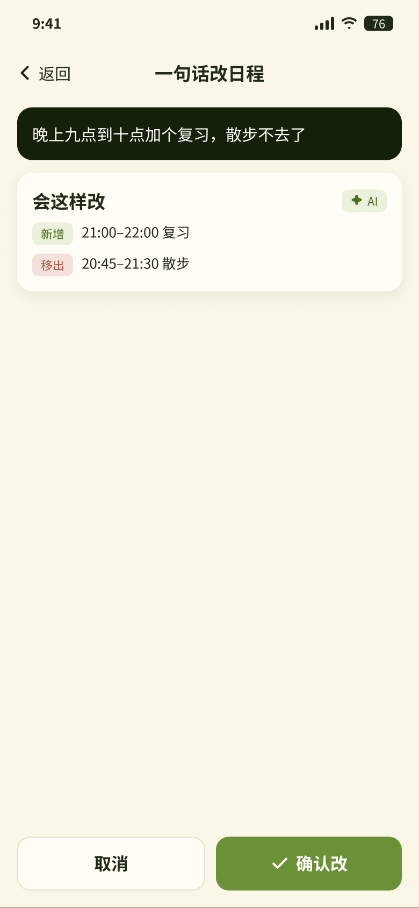
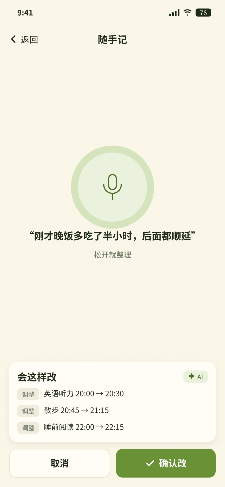
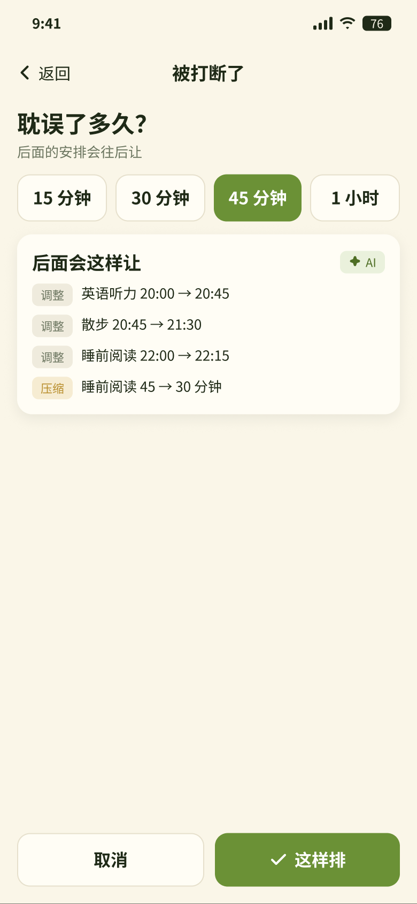
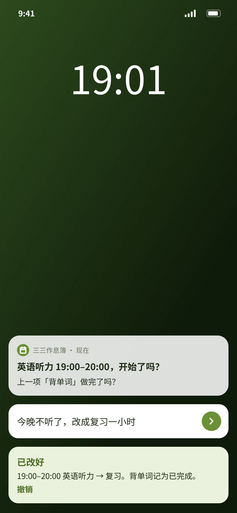
待核对 → 已完成 / 已跳过 / 没记录
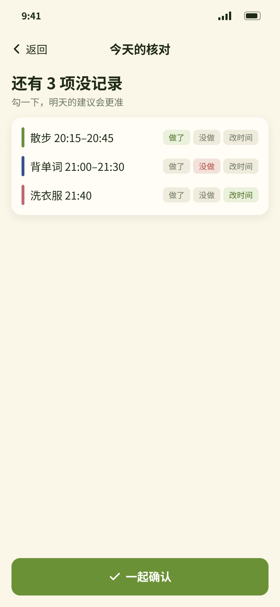
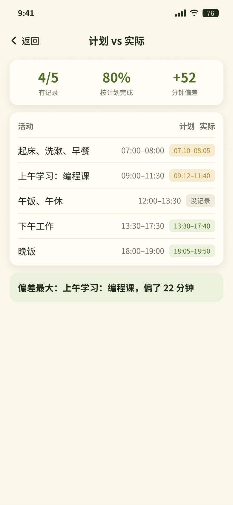
安排：排一天、收件箱
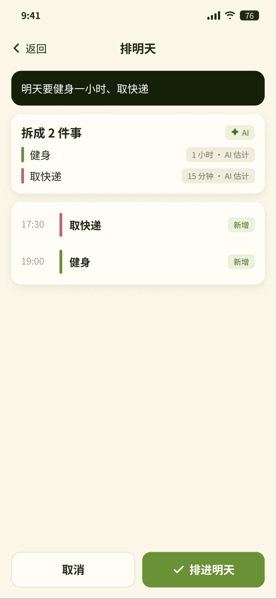
基础：模板、学习项目、首次使用
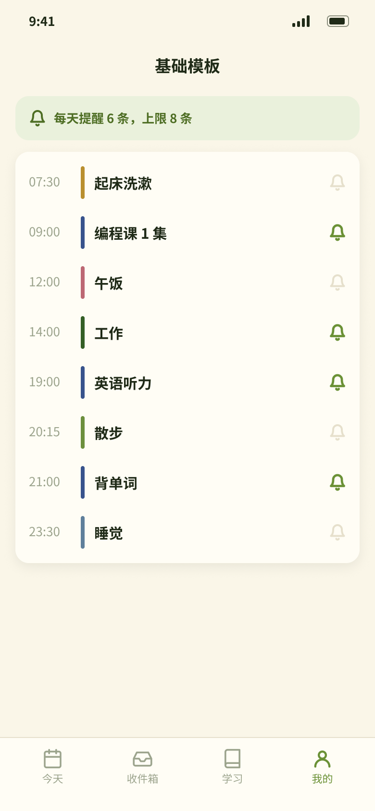
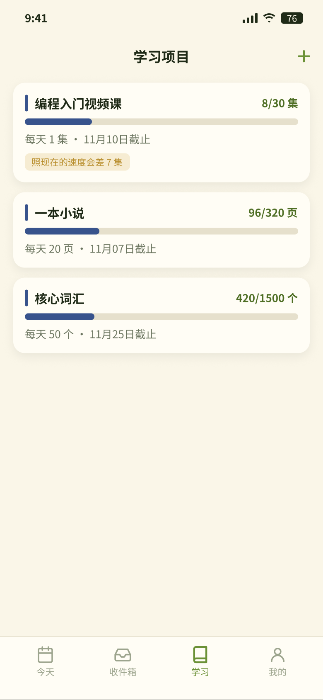
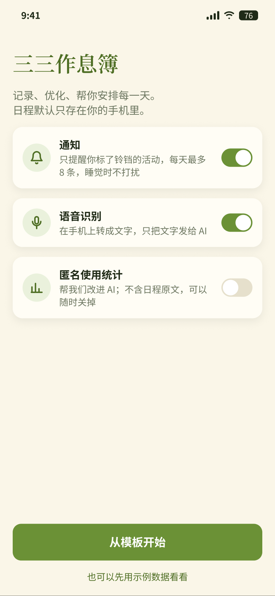
V1.1 优化
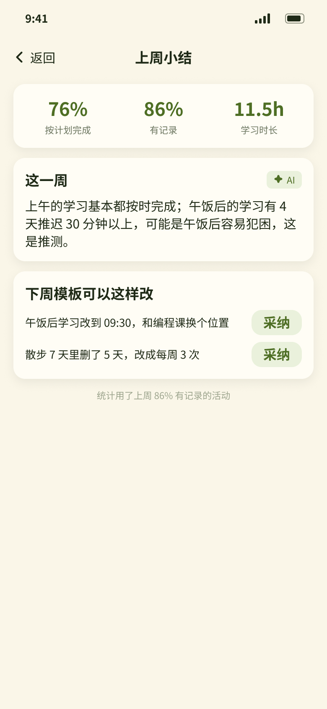
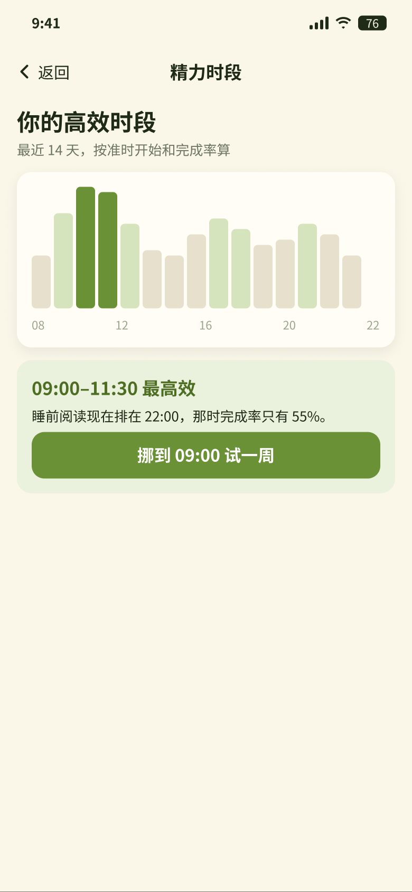
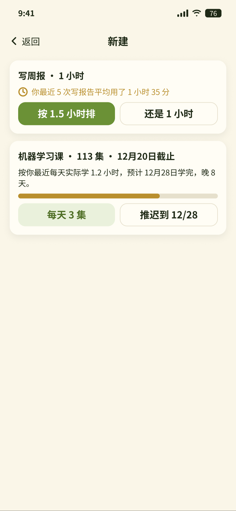
V1.2 录入与长期目标
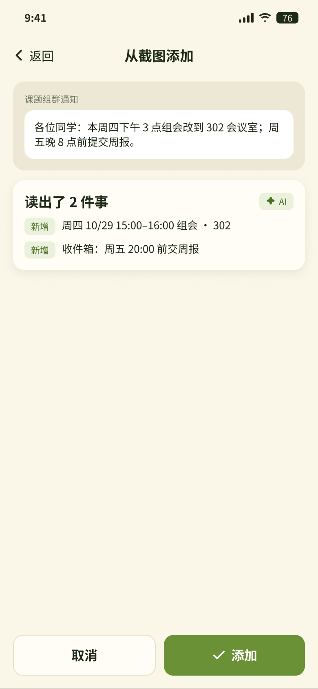
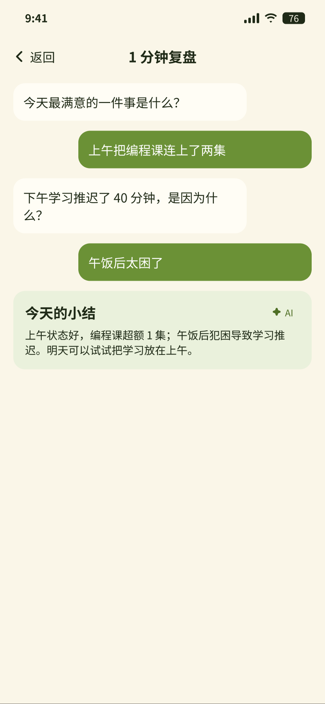
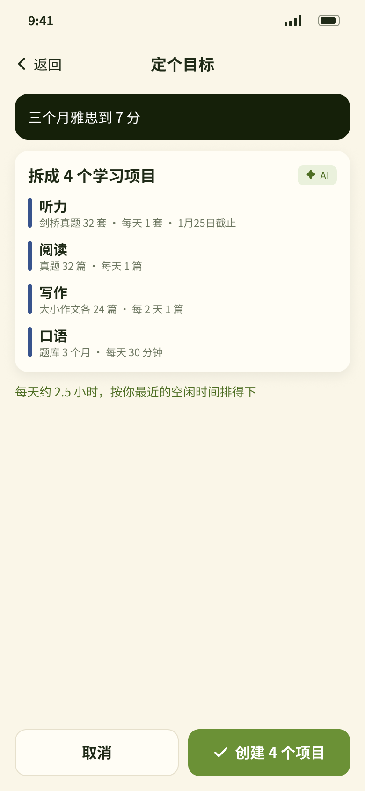
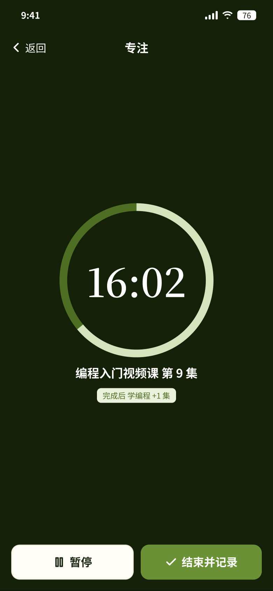
前后端交互逻辑：提醒、记录与核对
sequenceDiagram participant L as 本机调度 participant U as 用户 participant D as 本地数据 participant S as 服务端（可选同步与埋点） L->>U: 到点推送「开始了吗」，顺带问上一项做完没有 U->>D: 开始 / 晚 15 分钟 / 跳过（actual_start） U->>D: 打勾或下一条提醒里确认（actual_end） Note over L,U: 未标提醒的活动：App、小组件打勾记录 L->>U: 每晚 1 条「今天的核对」 U->>D: 批量勾选做了 / 没做 / 改时间 D->>D: 当天结束仍无记录的标为没记录 D-->>S: 用户同意后上传匿名事件（不含日程原文）
LLM 交互逻辑：一句话、语音、截图统一入口
flowchart TB
A1[用户：打字、语音、通知回复、截图] --> B1[前端：语音在本机转文字；截图压缩]
B1 --> D1[服务端中转：校验来源与长度，附提示词和必要的日程片段]
D1 --> E1[大模型：DeepSeek 理解文字，通义千问 VL 读截图，输出操作指令]
E1 --> F0{规则：底线检查}
F0 -->|对象不存在、日期说不清、数量缺失| F9[不执行，追问或说明不支持]
F0 -->|通过| F1[规则：换算日期，排进空档，顺延、压缩、移出]
F1 --> G1[前端：预览新增、调整、压缩、移出]
G1 -->|确认| H1[写入，7 秒内可撤销]
G1 -->|取消| H2[不改，记为待复盘样本]
D1 -.超时或失败.-> R1[本地规则理解常见说法] --> F0
| 传统流程 | AI 工作流 | AI 在该节点要做的事 |
|---|---|---|
| 用户手动拖动、逐项修改 | 一句话、语音或通知回复 | — |
| 用户自己想怎么改 | 大模型翻译成操作指令 | 判断改今天、改模板还是改学习项目；只输出指令，不决定具体几点 |
| 改完才发现冲突 | 规则排程并预览 | 已开始、已完成和睡觉时间不动；空档先吸收，放不下先压缩运动和护理，再压缩学习，最后移出重要性低的 |
| 只看计划 | 记录实际并解读 | 统计由规则算；大模型把结果写成人话，原因标明是推测 |
接口字段
| 接口 | 请求字段 | 返回字段 |
|---|---|---|
| 理解一句话 | text 原话；scope 当前页面；context 今天、模板、学习项目摘要；now 当前时间 | ops 指令数组（type、target、date、time、amount、where） |
| 读截图 | image 截图（JPEG，≤ 2MB）；now | items 事项数组（title、date_text、time_text、place）；readable |
| 写成人话 | stats 统计结果（完成率、偏差、覆盖率） | summary 小结；reasons 推测的原因；suggestions 建议 |
| 记录实际 | activity_id，action（start / done / skip / snooze / edit），at，source（通知 / App / 小组件 / 核对 / 专注） | status，actual_start，actual_end |
| 收件箱放置 | task（title、due、duration）；free_slots | suggestion（date、start、end、reason） |
4.2 功能详述
传统功能
| 页面板块 | 交互样式 | 功能详述 |
|---|---|---|
| 今天 | 顶部日期和记录覆盖数；「现在」卡片显示当前活动，可完成或被打断；一句话输入栏带语音；时间轴每项按分类着色，已完成的显示实际时间，有偏差时标出。 | |
| 到点通知 | 只推标了提醒的活动；按钮为开始、晚 15 分钟、跳过；顺带问上一项做完没有；睡眠时段不推，每天上限 8 条；连续 3 次不响应同一类，询问是否关掉。 | |
| 桌面小组件 | 中号显示现在该做和下一项，可直接打勾写入实际记录；小号显示今日学习进度。 | |
| 晚间核对 | 每晚 1 条推送；没记录的活动逐项选做了、没做、改时间，一起确认；不核对也不追问。 | |
| 计划 vs 实际 | 有记录数、按计划完成率、总偏差；逐项对比计划和实际，没记录的单独标出。 | |
| 被打断一键重排 | 选 15、30、45 分钟或 1 小时；按顺延规则预览后面的调整，确认才写入。 | |
| 基础模板 | 新的一天按模板生成；每项用铃铛设提醒，顶部显示每天提醒总数和上限。 | |
| 学习项目 | 进度条、每日目标、截止日；落后时给出提高每天目标或推迟截止两个选项。 | |
| 首次使用 | 说明日程只存在手机里；通知、语音识别、匿名统计分别授权，都可以不开。 |
AI 相关功能
| 功能点 | 运行逻辑 | 关键技术 / 运用模型能力 |
|---|---|---|
| 一句话改日程 V1.0 | 文字、语音或通知回复触发；模型输出指令，规则底线检查后排程，预览确认写入 | DeepSeek 结构化指令，温度 0，JSON 输出；规则引擎；本地规则兜底 |
| 语音随手记 V1.0 | 本机转文字后按一句话处理，修改对象是实际记录；后面的计划按顺延规则让位 | 系统语音识别；同上 |
| 一句话排一天 V1.0 | 模型拆出任务和估计时长，标「AI 估计」可改；规则放进目标日的空档 | DeepSeek 任务拆分；规则空档放置 |
| 任务收件箱 V1.0 | 模型估计时长和类别；规则按截止日、空档给建议，一键放进去 | DeepSeek 分类与时长估计；规则排程 |
| 复盘写成人话 V1.1 | 规则统计完成率和偏差；模型写小结，原因必须标明是推测 | DeepSeek 文本生成；只输入统计数字，不输入日程原文以外的信息 |
| 精力时段 V1.1 | 按近 14 天准时开始和完成率算各时段得分；模型只负责解释 | 规则统计 |
| 时长校准 V1.1 | 模型判断新任务属于哪一类；规则用该类实际时长算平均 | DeepSeek 分类；规则统计 |
| 目标可行性 V1.1 | 新建学习项目时，按最近实际每天可用时间算预计完成日 | 规则计算，不用模型 |
| 每周报告 V1.1 | 每周一生成；建议采纳前预览模板改动；写明数据覆盖率 | 规则统计 + DeepSeek 写作 |
| 截图导入 V1.2 | 看图模型读出事项和时间说法；规则换算日期并排进去，先预览 | 通义千问 VL；截图不保存 |
| 每晚复盘 V1.2 | 设定时间问最多 3 个问题；模型整理成当天小结，进入每周报告 | DeepSeek 对话与总结 |
| 目标拆解 V1.2 | 模型拆出学习项目草稿；每天目标由规则按截止日算；确认后创建 | DeepSeek 任务拆解；规则计算 |
5. 数据埋点
只在用户同意后上传匿名事件；事件不含日程原文，指令原话另需单独同意才上传。
| 事件 | 触发时机 | 关键属性 | 用于验证 |
|---|---|---|---|
| notify_send / notify_action | 推送发出 / 用户点了通知按钮 | activity_id，action（开始 / 晚点 / 跳过 / 回复），距推送秒数 | 推送是否有用、是否打扰 |
| actual_record | 记下实际 | source（通知 / App / 小组件 / 核对 / 专注），偏差分钟数 | 实际记录覆盖率 |
| evening_check | 完成晚间核对 | 待核对数，已核对数，耗时 | 核对是否被接受 |
| ai_request | 一句话、语音、截图请求 | 入口，理解方式（大模型 / 本地规则），耗时，指令数 | AI 可用性与延迟 |
| plan_preview / plan_apply / plan_undo | 预览、确认、撤销 | 指令类型，改动项数，确认后 5 分钟内是否手动再改 | 「一次就对」率 |
| inbox_add / inbox_place | 加任务 / 放进日程 | 是否采纳建议，放置距截止天数 | 收件箱放置率 |
| insight_view / insight_adopt | 看到优化建议 / 采纳 | 建议类型，是否采纳 | 优化建议采纳率 |
| notify_mute | 关掉某类提醒或全部通知 | 类别，当天已推条数 | 打扰护栏 |
6. 数据集要求
| 数据类型 | 描述 | 数据规模要求 |
|---|---|---|
| 指令解析评测集 | 一句话改日程能否解析完全正确；超出能力时能否不乱改（现有报告） | 现有种子 60 条、真实说法 100 条；上线前补到真实说法 ≥ 500 条，覆盖通知回复和语音转写两种来源，逐条标注标准指令和是否超出能力 |
| 排一天与收件箱评测集 | 任务拆分是否完整、时长估计是否合理、放置是否满足截止日和冲突规则 | ≥ 200 条多任务说法，标注任务列表和可接受的时长范围 |
| 截图导入评测集 | 课表、群通知、作业要求截图能否读对事项、日期和时间 | ≥ 300 张，覆盖 3 类来源和模糊、长截图；不读错日期是第一指标 |
| 复盘解读评测集 | 人话小结是否忠于统计数字、原因是否标明推测 | ≥ 100 份周统计，人工按事实一致性打分 |
| 坏例回归集 | 被取消、被撤销、采纳后又手动改、没听懂的原话 | 每周复盘并入；改提示词或规则须全量回归 |
7. 验收标准
常规功能
| 功能点 | 预期 |
|---|---|
| 到点通知 | 到点误差 ≤ 1 分钟；未标提醒的活动不推；睡眠时段不推；单日超过上限时不再推并在 App 内提示 |
| 通知按钮 | 开始、晚 15 分钟、跳过在不打开 App 时写入记录；下一条提醒里能确认上一项 |
| 桌面小组件 | 现在该做和下一项与时间轴一致，切换时 1 分钟内刷新；打勾后 App 内同步 |
| 晚间核对 | 每天只推 1 条；批量确认后实际记录更新；当天结束仍无记录的标为没记录 |
| 被打断重排 | 已完成、已开始和睡眠时段不动；预览与写入结果一致；7 秒内可撤销 |
| 首次使用 | 不登录可用；三项授权都关闭时仍能正常记录和排程 |
AI 相关功能
| 功能点 | 测试方式 | 指标 |
|---|---|---|
| 一句话改日程 | 在指令解析评测集上跑完整流程（大模型 + 底线检查），逐条与标准指令比对 | 能力范围内全对率 ≥ 90%；超出能力时不乱改 ≥ 95%。网页版现状：全对 52/60，不乱改 37/40 |
| 一句话排一天 / 收件箱 | 在排一天评测集上比对任务列表和放置结果 | 任务无遗漏 ≥ 95%；放置违反截止日或覆盖已有安排为 0 |
| 截图导入 | 在截图评测集上比对事项、日期、时间 | 日期读错为 0（拿不准时必须追问）；事项全对率 ≥ 85% |
| 复盘写成人话 | 人工检查复盘解读评测集 | 与统计数字矛盾为 0；原因未标推测为 0 |
| 大模型降级 | 模拟超时、返回错误、输出格式错误 | 100% 回退本地规则或提示稍后再试；不出现未经预览的写入 |